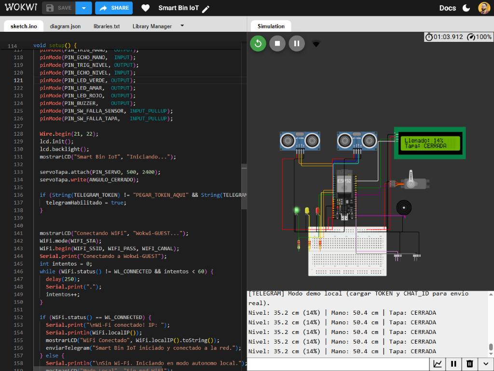

1. Introducción y Objetivos
En edificios, oficinas y espacios públicos, los cestos de residuos tradicionales presentan dos problemas operativos concretos: el contacto directo de las manos con la tapa (foco de contaminación cruzada) y el desborde imprevisto por falta de visibilidad sobre el nivel de llenado real, lo que obliga a recorridos innecesarios o a recolecciones tardías.
Mediante tecnología IoT sobre un microcontrolador ESP32, el proyecto Smart Bin IoT resuelve ambos problemas automatizando la apertura sin contacto, midiendo continuamente el volumen ocupado en porcentaje y enviando alertas puntuales por Telegram al personal de limpieza únicamente cuando el contenedor supera el umbral crítico o presenta una anomalía técnica.
Objetivo General
Diseñar, simular y validar un sistema IoT funcional de gestión inteligente de residuos con apertura automática, telemetría de llenado y respuesta segura ante fallas de hardware.
Objetivos Específicos
- Implementar apertura sin contacto (≤ 20 cm) y cierre automático diferido (4 s) mediante sensor ultrasónico y servomotor.
- Medir el porcentaje de llenado en tiempo real, reflejándolo en LCD I2C y semáforo LED (Verde, Amarillo, Rojo).
- Integrar conectividad Wi-Fi (
Wokwi-GUEST) y envío de notificaciones HTTPS a Telegram con detección de flanco anti-spam. - Diseñar y probar escenarios de falla intencionales (sensor y actuador) con transición a Modo Seguro.
- Dimensionar formalmente el consumo eléctrico (
P = V × I, Wh diarios y margen de seguridad del 30%).
2. Planificación Temporal (Diagrama de Gantt)
| Fase / Actividad | Período | Duración | Cronograma Visual (Noviembre 2026) |
|---|---|---|---|
| 1. Definición de problema, alcance y selección de componentes | 18/11 – 20/11 | 3 días | |
| 2. Arquitectura (Bloques), asignación de pines y Wire Diagram en Wokwi | 21/11 – 23/11 | 3 días | |
| 3. Programación ESP32, integración Wi-Fi + Telegram y lógica de fallas | 23/11 – 24/11 | 2 días | |
| 4. Ensayos funcionales, simulación de fallas y cálculo de consumo | 24/11 | 1 día | |
| 5. Defensa oral en vivo (Google Meet) | 25/11 | 1 día | |
| 6. Cierre de informe técnico / Landing Page y entrega en DVCAMPUS | 26/11 – 28/11 | 3 días |
3. Diagrama de Bloques (Arquitectura Funcional IoT)
Siguiendo la metodología de la cátedra, el sistema se organiza en los 5 bloques funcionales de una arquitectura IoT, separando captación de datos, procesamiento, actuación local, comunicación remota y alimentación eléctrica:
1. Entradas (Sensores)
- HC-SR04 Externo (presencia mano ≤ 20 cm)
- HC-SR04 Interno (distancia a residuos)
- 2x Switches de prueba (inyección de fallas)
2. Procesamiento
- ESP32 DevKit v1 (32-bit, Wi-Fi integrado)
- Cálculo de % llenado y umbrales
- Máquina de estados y Modo Seguro
3. Salidas (Actuadores)
- Servomotor SG90 (tapa 0° / 90°)
- LCD 16x2 I2C (estado y códigos de error)
- Semáforo LED (Verde/Amarillo/Rojo)
- Buzzer (avisos sonoros y alarmas)
4. Comunicación
- Red Wi-Fi
Wokwi-GUEST - API HTTPS REST de Telegram
- Notificaciones por flanco al celular
5. Alimentación
- Fuente DC 5V / 2A (uso fijo)
- Rieles comunes 5V (Rojo) y GND (Negro)
- Alternativa portátil: 3x 18650 (3P)
4. Esquema de Conexiones (Wire Diagram)
El circuito fue armado en Wokwi utilizando una protoboard de distribución para garantizar una única referencia de masa común y evitar compartir pines físicos en la placa ESP32. Se respetó estrictamente la convención de colores: Rojo = 5V (VCC), Negro = GND y colores diferenciados por señal. Todos los LEDs incorporan resistencias limitadoras de 220 Ω en serie.

Tabla de Conexionado (Pinout ESP32)
| Componente | Pin Componente | Destino ESP32 / Protoboard | Color de Cable |
|---|---|---|---|
| Alimentación General | 5V / GND | Riel + / Riel - Protoboard | Rojo / Negro |
| HC-SR04 Externo (Mano) | VCC / GND / TRIG / ECHO | 5V / GND / GPIO 13 / GPIO 14 | Rojo / Negro / Naranja / Dorado |
| HC-SR04 Interno (Nivel) | VCC / GND / TRIG / ECHO | 5V / GND / GPIO 26 / GPIO 27 | Rojo / Negro / Azul / Cian |
| Servomotor SG90 | V+ / GND / PWM | 5V / GND / GPIO 18 | Rojo / Negro / Violeta |
| LCD 16x2 I2C (0x27) | VCC / GND / SDA / SCL | 5V / GND / GPIO 21 / GPIO 22 | Rojo / Negro / Verde / Blanco |
| LED Verde / Amarillo / Rojo | Ánodo (via R 220 Ω) / Cátodo | GPIO 25 / 33 / 32 → GND | Verde / Amarillo / Naranja / Negro |
| Buzzer | Positivo (+) / Negativo (-) | GPIO 19 / GND | Magenta / Negro |
| Switches de Falla (S1 / S2) | Común (2) / Pin 3 | GPIO 4 / GPIO 5 → GND (INPUT_PULLUP) | Violeta / Gris / Negro |
5. Cálculo Formal de Consumo Eléctrico (P = V × I)
Aplicando paso a paso la metodología de la guía de cátedra (Cálculo del Consumo en un Sistema IoT), se relevan los tres estados eléctricos (reposo, normal y pico de arranque/transmisión) de cada componente para dimensionar la fuente de alimentación y la autonomía en batería.
| Componente | Voltaje (V) | I Reposo (mA) | I Normal (mA) | I Pico (mA) | P Normal (W) | Ciclo de Trabajo | P Promedio (W) |
|---|---|---|---|---|---|---|---|
| ESP32 DevKit v1 (Wi-Fi activo) | 5.0 V | 30 mA | 100 mA | 240 mA | 0.500 W | 100% | 0.500 W |
| 2x Sensor HC-SR04 | 5.0 V | 4 mA | 30 mA | 40 mA | 0.150 W | 100% | 0.150 W |
| LCD 16x2 I2C (con backlight) | 5.0 V | 20 mA | 25 mA | 30 mA | 0.125 W | 100% | 0.125 W |
| Semáforo LED (1 activo + 220 Ω) | 3.3 V | 0 mA | 10 mA | 10 mA | 0.033 W | 100% | 0.033 W |
| Buzzer (avisos puntuales) | 3.3 V | 0 mA | 30 mA | 30 mA | 0.099 W | 1% | 0.001 W |
| Servomotor SG90 (tapa) | 5.0 V | 10 mA | 150 mA | 650 mA | 0.750 W | 5% activo / 95% rep. | 0.085 W |
| TOTAL DEL SISTEMA | 5.0 V | 64 mA | 345 mA | 1000 mA (1.0 A) | 1.657 W | — | 0.894 W (≈ 0.90 W) |
Fuente Recomendada (Instalación Fija)
Fuente conmutada DC 5V / 2A (10 W). Absorbe sin caídas de tensión el pico de arranque del servo SG90 (650 mA) sumado a la transmisión Wi-Fi del ESP32 (240 mA), evitando reinicios por brownout.
Dimensionamiento Portátil (Baterías 18650)
Con celdas Li-Ion 18650 de 3.7 V / 2600 mAh (9.62 Wh por celda):
28.08 Wh / 3.7 V = 7.59 Ah → requiere 3 celdas en paralelo (3P = 7800 mAh) con módulo boost 5V + TP4056 para 24 h continuas.
(Optimizando con Deep Sleep en una futura versión se reduce a 1 sola celda).
6. Presupuesto Estimado (Factibilidad Económica — ARS)
| Componente | Cantidad | Precio Unitario Aprox. (ARS) | Subtotal (ARS) |
|---|---|---|---|
| Placa ESP32 DevKit v1 (30 pines, Wi-Fi/BT) | 1 | $ 14.500 | $ 14.500 |
| Sensor Ultrasónico HC-SR04 | 2 | $ 3.500 | $ 7.000 |
| Servomotor Micro SG90 (180°) | 1 | $ 4.800 | $ 4.800 |
| Display LCD 16x2 con módulo I2C soldado | 1 | $ 7.500 | $ 7.500 |
| Protoboard 400 puntos + set cables Dupont | 1 | $ 6.000 | $ 6.000 |
| LEDs (Verde, Amarillo, Rojo), 3x R 220 Ω y Buzzer 5V | 1 kit | $ 2.500 | $ 2.500 |
| Fuente de alimentación DC 5V / 2A | 1 | $ 6.500 | $ 6.500 |
| TOTAL ESTIMADO DEL PROTOTIPO FÍSICO | $ 48.800 ARS | ||
7. Descripción del Hardware y Software Utilizado
El sistema integra dos sensores ultrasónicos para captar la proximidad de la mano y el nivel interno de residuos. La placa ESP32 DevKit v1 procesa ambas lecturas, gobierna un servomotor SG90 para la apertura de la tapa, muestra el estado en una pantalla LCD 16x2 por bus I2C junto a un semáforo de 3 LEDs y un buzzer, y transmite alertas críticas mediante HTTPS a un Bot de Telegram.
| Elemento / Componente | Función en el sistema | Criterio de selección técnica | Alternativas evaluadas y motivo de descarte | Forma de conexión / Interfaz | Librerías o código relacionado |
|---|---|---|---|---|---|
| ESP32 DevKit v1 | Microcontrolador principal y conectividad Wi-Fi | Wi-Fi nativo, 30 pines GPIO, soporte directo de Wokwi-GUEST y TLS |
Arduino UNO: descartado por carecer de Wi-Fi integrado | USB / Fuente 5V externa | WiFi.h, WiFiClientSecure.h, HTTPClient.h |
| 2x Sensor HC-SR04 | Detección de mano (≤20 cm) y nivel de llenado (5–40 cm) | Medición sin contacto resistente a suciedad, bajo costo y rango preciso | Sensor IR obstáculo: descartado por sensibilidad a luz ambiental y objetos oscuros | Pines digitales TRIG/ECHO (13/14 y 26/27), 5V | pulseIn() con timeout de 30 ms |
| Servomotor SG90 | Acciona apertura (90°) y cierre (0°) de la tapa | Control angular exacto por PWM sin necesidad de driver H-bridge externo | Motor DC común: descartado por requerir puente H y finales de carrera adicionales | Pin PWM GPIO 18, alimentación 5V | ESP32Servo.h |
| LCD 16x2 I2C | Muestra % de llenado, estado de tapa y códigos de falla | Reduce de 6 a solo 2 pines (SDA/SCL), alta legibilidad local | LCD paralelo sin I2C: descartado por consumir demasiados GPIOs | Bus I2C (SDA=21, SCL=22), dirección 0x27 |
Wire.h, LiquidCrystal_I2C.h |
| 3x LEDs + R 220 Ω + Buzzer | Semáforo visual de capacidad y alertas sonoras | Lectura instantánea a distancia y aviso acústico de apertura o falla | Tira NeoPixel: descartada por mayor consumo y complejidad innecesaria | GPIOs 25, 33, 32 (LEDs) y GPIO 19 (Buzzer) | digitalWrite(), tone() |
| 2x Slide Switch | Inyección controlada de fallas en simulación | Permite demostrar fallas de sensor y actuador en vivo sin desarmar el circuito | Desconexión manual de cables: descartada por poca reproducibilidad en vivo | GPIOs 4 y 5 con INPUT_PULLUP a GND |
digitalRead() activo en LOW |
Arquitectura del Software
El firmware fue desarrollado en C++ para Arduino/ESP32 y validado en Wokwi. Se utilizan las librerías WiFi.h,
WiFiClientSecure.h y HTTPClient.h para la comunicación HTTPS directa contra la API de Telegram (sin depender
de librerías externas inestables), junto a ESP32Servo.h y LiquidCrystal_I2C.h para el control de actuadores.
El código se estructura de forma modular: en setup() se inicializan pines, LCD, servo en posición cerrada y la conexión
Wi-Fi con timeout controlado de 15 segundos (si no hay red, el dispositivo continúa operando en modo local autónomo). En loop()
se evalúan primero las condiciones de falla crítica, luego el porcentaje de llenado con constrain() y la apertura/cierre no bloqueante
mediante millis().
Para evitar el envío repetitivo de mensajes (spam), todas las notificaciones a Telegram implementan detección de flanco
mediante banderas booleanas de estado (alertaLlenoEnviada, alertaFallaSensorEnviada, alertaFallaTapaEnviada),
garantizando exactamente una alerta por evento y un aviso de restablecimiento cuando la condición se normaliza.
8. Ensayos, Pruebas y Escenarios de Falla (Plantilla Obligatoria)
Se diseñaron y ejecutaron 4 escenarios en simulación (1 funcionamiento normal + 2 fallas de componentes obligatorias + 1 protección operativa anti-desborde), documentados bajo la plantilla oficial de la cátedra:
Nombre del escenario: Apertura sin contacto y monitoreo progresivo de llenado.
Tipo: Funcionamiento Normal.
Descripción de la condición inicial: Cesto al 14% (35 cm), LED verde encendido, tapa cerrada (0°), Wi-Fi Wokwi-GUEST conectado (IP 10.10.0.2).
Evento o acción a simular: Se acerca la mano al HC-SR04 externo a 10 cm, luego se retira a 50 cm; posteriormente se reduce el HC-SR04 interno a 15 cm (71%) y a 4 cm (100%).
Comportamiento esperado del sistema (teórico): El servo gira a 90° con pitido de confirmación y cierra tras 4 segundos; el semáforo cambia de verde a amarillo (71%) y rojo (100%) enviando una única alerta de recolección a Telegram.
Resultado observado en simulación: Servo giró a 90° (LCD Tapa: ABIERTA), cerró a los 4 s; en 15 cm encendió LED amarillo (71%); en 4 cm encendió LED rojo (100%), bloqueó apertura y envió la notificación HTTP 200 a Telegram.
¿El sistema reaccionó correctamente? Sí.
Acción de contingencia implementada: Bloqueo automático anti-desborde (≥95%) y notificación única por flanco a Telegram.
Nombre del escenario: Desconexión o lectura inválida del sensor ultrasónico de llenado (ERR-S01).
Tipo: Falla de Sensor.
Descripción de la condición inicial: Cesto operando normalmente al 14%, LED verde activo, switches de falla en posición normal (OFF).
Evento o acción a simular: Se acciona el interruptor sw_sensor (GPIO 4 a LOW), simulando pérdida de eco (timeout de pulseIn / lectura -1 cm).
Comportamiento esperado del sistema (teórico): El sistema debe detectar lectura inválida, cerrar la tapa en Modo Seguro, evitar falsas alertas de recolección, encender LED rojo, emitir 3 pitidos, mostrar ERR-S01: SENSOR / MODO SEGURO en LCD y avisar por Telegram.
Resultado observado en simulación: La tapa se aseguró en 0°, el LCD mostró ERR-S01: SENSOR / MODO SEGURO, encendió el LED rojo, sonaron 3 pitidos y llegó la alerta única a Telegram. Al desactivar el switch se recuperó automáticamente informando el restablecimiento.
¿El sistema reaccionó correctamente? Sí.
Acción de contingencia implementada: Transición inmediata a Modo Seguro, bloqueo de cálculo erróneo, código de diagnóstico en pantalla (ERR-S01) y aviso remoto de mantenimiento.
Nombre del escenario: Servomotor de tapa trabado o sin respuesta ante orden de apertura (ERR-A01).
Tipo: Falla de Actuador.
Descripción de la condición inicial: Cesto disponible (14%, LED verde), tapa cerrada esperando presencia.
Evento o acción a simular: Se activa sw_tapa (simulando traba mecánica / ausencia de confirmación de movimiento) y se acerca la mano a 10 cm para solicitar apertura.
Comportamiento esperado del sistema (teórico): El sistema debe abortar el ciclo normal, mantener estado seguro sin forzar repetidamente el servo, encender LED rojo, mostrar ERR-A01: TAPA / REVISAR SERVO, sonar alarma y notificar por Telegram.
Resultado observado en simulación: Al detectar la mano en 10 cm con sw_tapa activo, el LCD cambió a ERR-A01: TAPA / REVISAR SERVO, encendió el LED rojo, el Monitor Serie registró la falla y Telegram recibió la alerta única. Al destrabar el switch volvió a operación normal.
¿El sistema reaccionó correctamente? Sí.
Acción de contingencia implementada: Bloqueo del actuador para evitar sobrecorriente/quemado del motor, alerta audiovisual local y notificación remota.
Nombre del escenario: Pérdida o indisponibilidad de red Wi-Fi al arranque.
Tipo: Otro (Conectividad).
Descripción de la condición inicial: Arranque del ESP32 sin acceso a red Wi-Fi disponible.
Evento o acción a simular: Timeout de asociación Wi-Fi tras 15 segundos de reintentos.
Comportamiento esperado del sistema (teórico): El equipo no debe quedar bloqueado en un bucle infinito en setup(); debe conmutar a Modo Local Autónomo manteniendo sensores, servo, LCD y semáforo operativos.
Resultado observado en simulación: El LCD mostró Modo Local / Sin red WiFi y el cesto operó normalmente todas sus funciones físicas locales sin cuelgues.
¿El sistema reaccionó correctamente? Sí.
Acción de contingencia implementada: Timeout no bloqueante con degradación elegante a operación autónoma local.
9. Código Fuente Comentado (ESP32)
Nota de seguridad: Siguiendo las buenas prácticas de la cátedra, las credenciales de Telegram (TELEGRAM_TOKEN y TELEGRAM_CHAT_ID)
se muestran como placeholders en el código público y se cargan únicamente durante las pruebas privadas.
// Smart Bin IoT — ESP32 (Wokwi-GUEST + Telegram HTTPS + Deteccion de Fallas)
// Ver archivo completo en el repositorio: sketch.ino | Librerias: ESP32Servo, LiquidCrystal I2C
#include <WiFi.h>
#include <WiFiClientSecure.h>
#include <HTTPClient.h>
#include <Wire.h>
#include <LiquidCrystal_I2C.h>
#include <ESP32Servo.h>
const char* WIFI_SSID = "Wokwi-GUEST";
const char* WIFI_PASS = "";
const int WIFI_CANAL = 6;
const char* TELEGRAM_TOKEN = "PEGAR_TOKEN_AQUI";
const char* TELEGRAM_CHAT_ID = "PEGAR_CHAT_ID_AQUI";
bool telegramHabilitado = false;
const int PIN_TRIG_MANO = 13, PIN_ECHO_MANO = 14;
const int PIN_TRIG_NIVEL = 26, PIN_ECHO_NIVEL = 27;
const int PIN_SERVO = 18, PIN_BUZZER = 19;
const int PIN_LED_VERDE = 25, PIN_LED_AMAR = 33, PIN_LED_ROJO = 32;
const int PIN_SW_FALLA_SENSOR = 4, PIN_SW_FALLA_TAPA = 5;
const float DISTANCIA_APERTURA_CM = 20.0;
const float ALTURA_CESTO_VACIO_CM = 40.0;
const float ALTURA_CESTO_LLENO_CM = 5.0;
const int UMBRAL_MEDIO_PCT = 60, UMBRAL_LLENO_PCT = 85, UMBRAL_BLOQUEO_PCT = 95;
const int ANGULO_CERRADO = 0, ANGULO_ABIERTO = 90;
const unsigned long TIEMPO_TAPA_ABIERTA_MS = 4000;
LiquidCrystal_I2C lcd(0x27, 16, 2);
Servo servoTapa;
bool tapaAbierta = false, fallaTapaActiva = false;
bool alertaLlenoEnviada = false, alertaFallaSensorEnviada = false, alertaFallaTapaEnviada = false;
unsigned long momentoApertura = 0;
// Envio HTTPS POST a API de Telegram (con deteccion de flanco en loop)
void enviarTelegram(const String& mensaje) {
Serial.println("[TELEGRAM] Evento: " + mensaje);
if (!telegramHabilitado || WiFi.status() != WL_CONNECTED) return;
WiFiClientSecure cliente;
cliente.setInsecure(); // Solo demostracion educativa
HTTPClient http;
String url = String("https://api.telegram.org/bot") + TELEGRAM_TOKEN + "/sendMessage";
http.begin(cliente, url);
http.addHeader("Content-Type", "application/x-www-form-urlencoded");
String msgEnc = mensaje; msgEnc.replace(" ", "%20");
int httpCode = http.POST(String("chat_id=") + TELEGRAM_CHAT_ID + "&text=" + msgEnc);
Serial.printf("[TELEGRAM] Respuesta HTTP: %d\n", httpCode);
http.end();
}
// Medicion ultrasonica con timeout de 30 ms para deteccion de sensor desconectado
float medirDistanciaCm(int pinTrig, int pinEcho) {
digitalWrite(pinTrig, LOW); delayMicroseconds(2);
digitalWrite(pinTrig, HIGH); delayMicroseconds(10);
digitalWrite(pinTrig, LOW);
unsigned long duracion = pulseIn(pinEcho, HIGH, 30000);
return (duracion == 0) ? -1.0 : (duracion * 0.0343) / 2.0;
}10. Análisis de Resultados, Conclusiones y Mejoras Futuras
Análisis de Resultados
- Logros: Se validó la cadena completa IoT (fenómeno físico → sensor → ESP32 → Wi-Fi → API Telegram → celular real) con respuesta estable y cero falsos positivos.
- Ajustes realizados durante las pruebas: Se corrigió la polaridad inicial de los switches de falla (conectando pin 3 a GND) para arrancar en modo normal, y se agregó
WiFi.mode(WIFI_STA)con timeout ampliado a 15 s para asegurar la obtención de IP enWokwi-GUEST. - Limitación de la simulación: Wokwi no reproduce ruido eléctrico, interferencia mecánica en el servo ni caídas de voltaje reales de alimentación, aspectos críticos para el pasaje a hardware físico.
Conclusiones y Hoja de Ruta (Examen Final)
- El prototipo demuestra que combinar telemetría remota con mecanismos locales de Modo Seguro evita fallas silenciosas en entornos reales.
- Mejoras proyectadas para implementación física (Examen Final):
- Montaje físico real con ESP32, HC-SR04 y Servo SG90 sobre contenedor prototipo.
- Incorporación de modo Deep Sleep y medición de batería para extender autonomía con celdas 18650.
- Validación de certificado TLS raíz (reemplazando
setInsecure()) y fin de carrera físico real en la tapa.